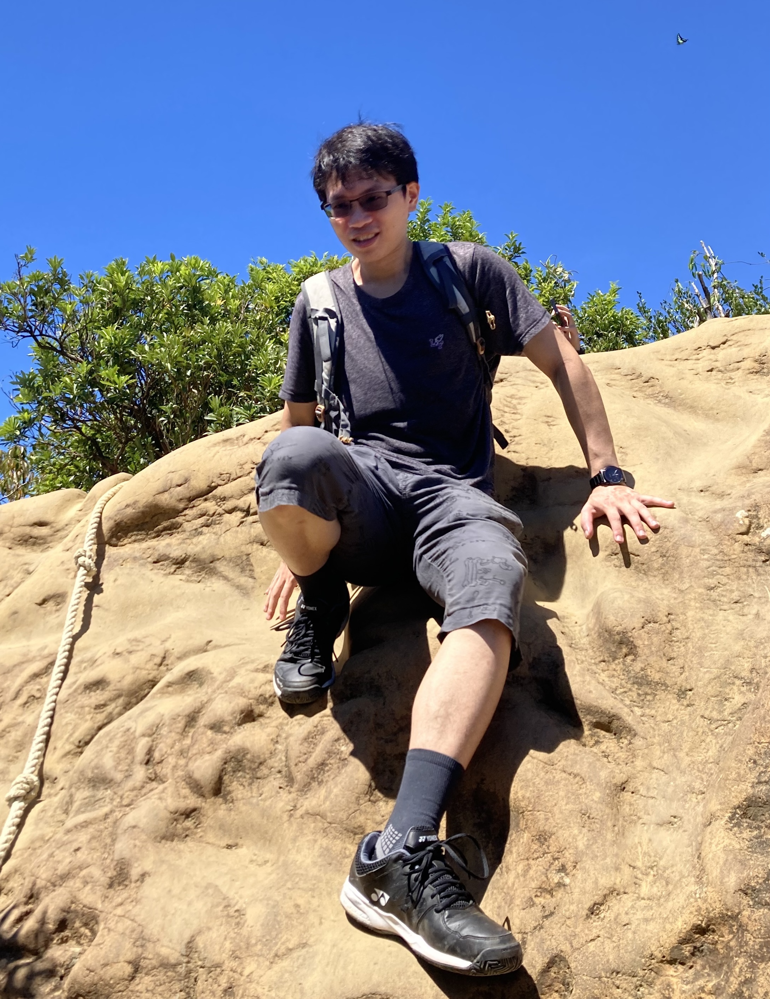

You-Cheng Chou 周祐正

HCMC Fellow (Postdoctoral Researcher)
Korea Institute for Advanced Study
Korea Institute for Advanced Study
Room 8317, Building 8
Korea Institute for Advanced Study
I am an HCMC Fellow at the Korea Institute for Advanced Study (KIAS), working in algebraic geometry with interests in enumerative geometry, quantum K-theory, and integrable systems. My recent research focuses on two main directions: quantum K-theory and Gopakumar--Vafa invariants, and the geometry of generalized Lamé equations and their monodromy. I received my PhD in Mathematics from the University of Utah in May 2022 under the supervision of Y.P. Lee, and previously held a postdoctoral position at Academia Sinica. Here is my CV.
Last updated 17 October 2026
Papers
Preprints
-
RC-positivity of complex surfaces,
with
Kuang-Ru Wu
arXiv:2609.33656 -
Virasoro Recursions for Simplicially Stable Curves
with Colliding Markings
,
with
Hsian-Hua Tseng
arXiv:2608.12507 | submitted -
On the K-theoretic logarithmic double ramification class
,
with Kamyar Amini,
Leo Herr,
David Holmes,
Irit Huq-Kuruvilla,
and
Y.P. Lee
arXiv:2607.13376 | submitted -
A theory of generalized Lamé curves,
with
Chin-Lung Wang
and Po-Sheng Wu
arXiv:2604.21880 | submitted
Published papers
-
Characterization and enumeration on Lamé equations
with finite monodromy
,
with
Chin-Lung Wang
and Po-Sheng Wu
arXiv:2402.16286 | Trans. Amer. Math. Soc. 378 (2025), no. 8, 5279–5304 [link] -
Integrality of genus zero Gopakumar-Vafa type invariants
of semi-positive varieties
arXiv:2312.01413 | Internat. J. Modern Phys. A 39 (2024), no. 33, 2446014 [link] -
Higher-genus quantum K-theory,
with
Leo Herr
and
Y.P. Lee
arXiv:2305.10137 | Pacific J. Math. 330 (2024), no. 1, 85–121 [link] -
Quantum K-invariants and Gopakumar-Vafa invariants II.
Calabi-Yau threefolds at genus zero
,
with
Y.P. Lee
arXiv:2305.08480 | Geom. Topol. 29 (2025), no. 9, 4665–4693 [link] -
Gopakumar-Vafa Invariants = Quantum K-invariants
on Calabi-Yau threefolds
,
with
Y.P. Lee
arXiv:2212.13432 | in Categorical and Enumerative Aspects of Mirror Symmetry, KIAS Springer Ser. Math. 5, Springer, Singapore, 2026, pp. 1–19 [link] -
Quantum K-invariants and Gopakumar-Vafa invariants I.
The quintic threefold
,
with
Y.P. Lee
arXiv:2211.00788 | Amer. J. Math., accepted for publication [link] -
The Log Product Formula in quantum K-theory,
with
Leo Herr
and
Y.P. Lee
arXiv:2012.09379 | Math. Proc. Cambridge Philos. Soc. 175 (2023), no. 2, 225–252 [link] -
Virasoro constraints for moduli of weighted pointed stable curves
,
with
Y.P. Lee
arXiv:1908.09027 | J. Lond. Math. Soc. (2) 106 (2022), no. 3, 2050–2074 [link]
Theses
-
New Results in Gromov-Witten Theory
of a Point and the Quintic Threefold
PhD thesis, University of Utah, 2022
Not intended for separate publication; the main results are covered by Virasoro constraints for moduli of weighted pointed stable curves and Quantum K-invariants and Gopakumar-Vafa invariants I: The quintic threefold . -
Generalized Lamé equation with finite monodromy
arXiv:1611.06643 | Bachelor thesis, National Taiwan University
Not intended for separate publication; the main results are covered and generalized by Characterization and enumeration on Lamé equations with finite monodromy .
Talks & Travels
Upcoming talks & travels
2026
12/7 – 12/11
Enumerative Geometry in East Asia 2026
(Hong Kong)
Past talks
2026
9/14 – 9/18
Permutation-equivariant K-theoretic string equation,
3rd Korea–Taiwan Enumerative Geometry Meeting
(Gangneung)
6/22 – 6/25
Moduli of generalized Lamé curves,
International Conference for the 80th Anniversary
of the Korean Mathematical Society
(Seoul)
4/27 – 4/30
Moduli of generalized Lamé curves,
Special Geometry, D-modules, and Modular Forms
(Taipei)
2025
11/19 – 11/21
Permutation-equivariant quantum K-theory of a point,
KIAS Math–HCMC Fall Workshop 2025
(Jeongseon)
11/3 – 11/7
Permutation-equivariant quantum K-theory of a point,
Korea–Taiwan Enumerative Geometry Meeting 2025
(Tainan)
9/25 – 9/29
Genus zero quantum K-invariants and Gopakumar–Vafa invariants
on semi-positive varieties,
East Asian Symplectic Conference 2025
(Sapporo)
9/16 – 9/19
Permutation-equivariant quantum K-theory of a point,
SIMIS–Sinica Interdisciplinary Workshop
(Shanghai)
8/7
Genus 1 quantum K-theory of a point,
Academia Sinica
(Taipei)
2024
10/16
K-theoretic multiple cover formula on Calabi-Yau threefolds,
Special Seminar, Kavli IPMU
(Kashiwa)
9/30 – 10/4
K-theoretic multiple cover formula,
Seoul–Taipei Enumerative Geometry Meeting
(Busan)
2023
11/6 – 11/10
Quantum K-invariants = Gopakumar-Vafa invariants
on Calabi-Yau threefolds at genus zero,
Algebraic Geometry in East Asia
(Seoul)
7/5 – 7/6
Quantum K-invariants = Gopakumar-Vafa invariants
on Calabi-Yau threefolds at genus zero,
Concerto in Quantum K-theory
(Hangzhou)
6/2 – 6/16
BCOV conjectures on quintic threefolds,
Calabi–Yau with Small Parameters
(Taipei)
2019
Virasoro constraints for moduli of weighted pointed stable curves,
FRAGMENT Seminar
(Fort Collins)
Teaching
University of Utah
Spring 2022
Math 1090 Business Algebra (Instructor)
Fall 2021
Math 1090 Business Algebra (Instructor)
Fall 2020
Math 1060 Trigonometry (Instructor)
Spring 2020
Math 1060 Trigonometry (Instructor)
Fall 2019
Math 1090 Business Algebra (Instructor)
Fall 2018
Math 1060 Trigonometry (Instructor)
Spring 2018
Math 2250 Differential Equations and Linear Algebra
(Teaching Assistant)
Fall 2017
Math 1210 Calculus I
(Teaching Assistant)